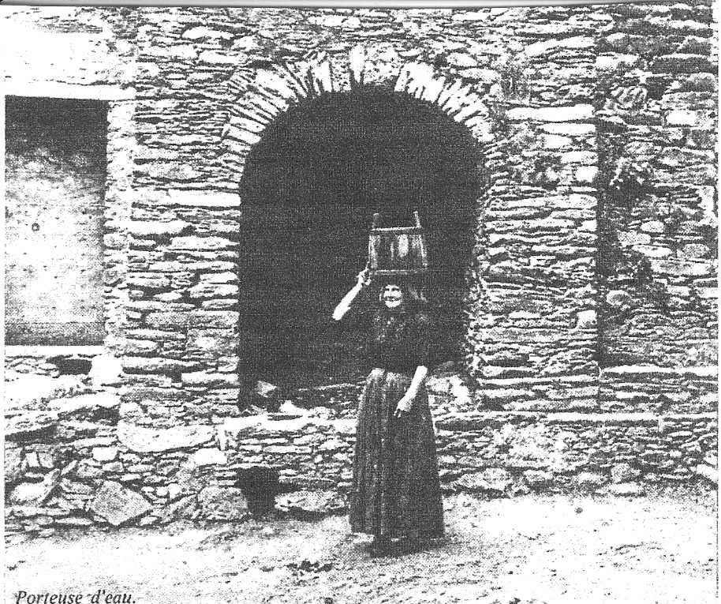
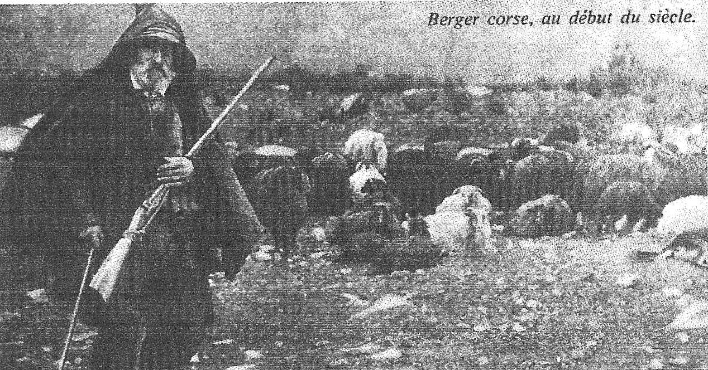
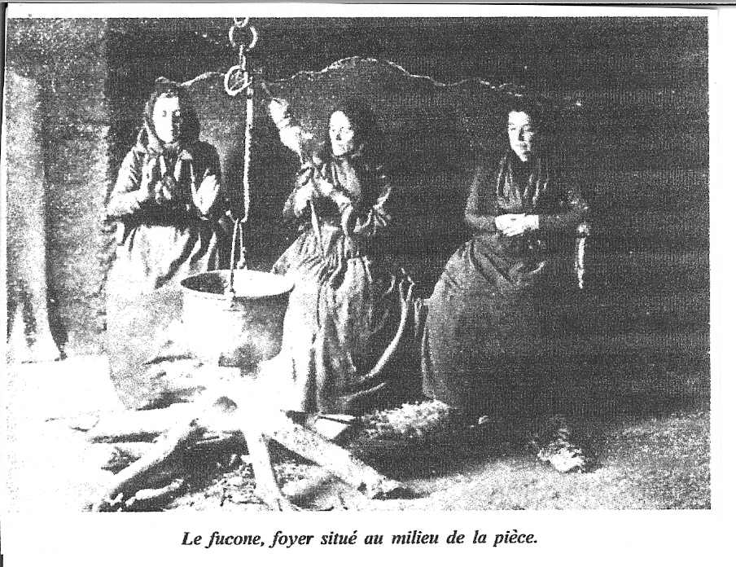

§ Home § Search § SoupTales § Any comments?
Corsican Soup and Pulp Fiction
(e-SoupSong 21: January 1, 2002)
ONCE UPON A TIME, Paolo Saverini's poor widow lost her son to a fatal quarrel with Nicolo Ravolati in Bonifacio, Corsica's most southern city. Her response? She starves her old dog--giving him "not even a bit of bread or a drop of soup"--and trains it to attack a sausage tied around a scarecrow's neck. Then she walks that starving dog to Nicolo's shop, takes off the leash, and cries, "At him! At him! Tear him, tear him!" Corsican vendetta, all in a day's work....
{kind=link}
When Count Lory de Vallelot, calvary officer in the dark days of Napoleon III's defeat by the Prussians, returns to his estate in Corsica--stolen by the hated Perucca family and now possessed unknowingly by the Perucca heir, adorable Denise, the woman of his dreams--what does he do? He immediately stops at the Hotel Clement in Bastia and dines on soup--likely minestra di castagnigna (chestnut soup), the favorite of his hero, Corsican-born Napoleon Bonaparte.
Convent-bred Sybilia Rocca, age 16, is suddenly sacrificed by her parents to an arranged marriage--one fine day just walked over stony paths for 6 hours on an evil-tempered mule to the mountain village of Taita...and dumped off to marry the gay son of powerful Xavier Rocca, local leader of the National Front party. Fortunately, spooky mother-in-law Madame Rocca--a mazzeri who leaves her body to hunt the souls of those about to die--likes the girl. She alone treats her kindly, encouraging her to eat and put on weight as she stirs a simmering pot of thick minestra....
Parisian-based exporter Phil Sherman is coerced into helping CIA operative Maximilian Mortimer crack an unknown dope ring that is processing Chinese opium into heroin and shipping it to the U.S. A few friendly phone calls turn into an undercover operation, placing Sherman in extreme jeopardy as he goes off to fish with and be fished by playboy businessman Louis Ricard in his Corsican stronghold near Sartene. With the help of the hot and luscious Renee, Sherman discovers the opium processing plant there--and the chase is on. "Suddenly I hated this beautiful, mysterious, savage island with its swarthy citizens in their black clothes, their unsmiling, unfriendly faces and their dark, suspicious eyes." He escapes to Ajaccio and books a 3rd class ticket on a 9 pm ferry to Nice. "To fill in the long hours before that, I dawdled over a bouillabaisse at the Palmiers, a restaurant just up from the dock." When his plans go awry, he blames the fish stew for distracting his vigilance...and he execrates it when he's imprisoned in an ancient cavern: "An hour passed and my somber thoughts wrapped around me. I tried not to think of how thirsty I was after the bouillabaisse."
Renegade DIA agent Alex Moran, son of brilliant "retired" CIA operative Piers Moran, is on the run, about to discover it was Dad and his Langley cronies who capitalized on their Corsican contacts during World War II to set up the highly profitable narcotics "French Connection" through Corsica. What is broken and desperate Alex served in the home of his future beloved when he escapes to Corsica from the reach of Dad's assassins? Minestra incu l'agliu, "A special soup that is so rich with garlic, I will not need the duegne to protect me from you," the coy and darling Michelle says. "Your honor is safe," Alex says. "Garlic or no garlic." "Ah, you say so. But we are not so primitive in this tiny village that we have not heard about Americans." "Let us eat the garlic soup, then," Alex says. "It will guarantee safety for both of us...."
Everywhere I look I find romances, thrillers, and mysteries set in Corsica that inevitably introduce a course of Corsican soup into the plot.
It's a curious combination. First, that so many pulp fiction plots have been set on this tiny Mediterranean island. Second, that these plots would have in common not just food, but soup. Think about it: pulp fiction is long on action, sex, drama, and description...but pretty short on sitting down to meals and talking about food.
There must be something extraordinary about Corsica, I thought--something that ties it both to high drama and soup.
And, of course, there's a LOT extraordinary about Corsica that ties it both to high drama and soup.
This mountainous island is just miles away from--even in sight of--the coasts of France and Italy, and its history is unique in world culture. Its original inhabitants settled there between 7000 and 4000 BCE, hunter-gatherers who over time built thousands of astonishing stone monuments, like those at Carnac, Stonehenge, and Avebury. And they stayed hunter-gathers with a fierce megalithic religion for thousands and thousands of years--even into the 20th century. Why? Because in spite of constant invasion, their "conquerers" wanted nothing to do with them--they only wanted to use their island as a strategic base for Mediterranean operations.
Carthaginians and Etruscans arrived in the 6th century BCE, but stuck to the coast for trading. Though they brought olive trees and grape vines with them (a good thing), their only interface with Corsicans was to plunder their beehives and capture them to sell as slaves. Needless to say, any Corsicans who weren't already in the mountains immediately fled there. Ionian Greeks showed up in 565 BCE--fleeing the Persians--and founded Alalia on the east coast. They didn't step a toe off the coast--kept as far away as possible from the locals. Then Romans seized Alalia in 259 BCE, ultimately settling all around the fringes of Corsica's coast so they could launch attacks against Gaul and battle Carthage. They stayed for hundreds of years, bringing Latin (the origin of the Corsican language) and introducing Christianity around 200 AD--but when Vandals wiped them off the island, they hardly left a footprint behind. Saracens followed Vandals and Ostrogoths, pillaging the place, again for hundreds of years--but they knew well enough to leave the ferocious natives alone. When Italian crusaders threw the Saracens out around 1077, Pisa stepped in, then Genoa. Italians brought chestnut trees and churches, but again stayed largely on the coast. There was lots of European-power wrangling during the Genoese era, including a brief interlude of democratic sovereighty under native son Pasquale Paoli in 1755, but in 1768 Genoa ceded Corsica to France, where it remains today despite two bruising world wars and the best efforts of Corsican separatists.
Pretty much ignored and left to their own devices throughout all this history, most Corsicans turned inland...living as goatherds and shepherds in inaccessible aeries on granitic mountains...subsisting on homegrown meat and produce...keeping to the old ways and pretty much maintaining their primeval and ironclad social codes of family loyalty, pride and independence, fierce honor, and vendetta. An ancient saying: "We live with our backs to the sea; the sea never brought us any good."
{kind=link}
HIGH DRAMA IN THE CORSICAN CORRAL
Okay, as a matter of record (and a little hearsay), just what's the "high drama" quotient of Corsicans over the centuries?
Odysseus talks about them in Book 10 of Homer's Odyssey, even giving insight into their early diet: "Then we fetched up in [Bonafacio,] the land of the Laestrygonians...A shore patrol was dispatched to scout the countryside. They came upon a husky young girl who directed them to her mother, the queen of those people. She proved to be hideous and huge as a mountain, and her husband was hot for blood. He grabbed the first man, tore him in half and chomped him down. The others made a break for it. They came screaming back to the shore, followed by the entire clan of Laestrygonians. As the men scrambled to cast off, they were bombarded by boulders pelted from the heights. It was like shooting fish in a barrel. The Laestrygonians smashed ships and men and gorged on lumps of Greek."
Then in 41 AD, Roman stoic Seneca, banished there for 8 years for alleged monkey business with Emperor Claudius' niece Julia Livillia, lamented: "...Corsica, scorching hot as soon as early summer is kindled and more deadly yet when the dog days lumber in, You're the same to those imprisoned on your land as to those who are free: The ashes of the living languish on your light soil." [Corsicans returned the compliment in a scabrous folktale about him that had young girls tear off his toga and whip him with stinging nettles.]
Saracens and Barbary pirates reportedly only took Corsicans as slaves if they were really desperate.
And then there's the way Corsican's treated each other. Vendetta, or blood feud, was a social code that required Corsicans to outright kill anyone who wronged the family honor. In the heyday of vendetta, between 1683 and 1715, nearly 30,000 out of 120,000 Corsicans lost their lives to it. Even in 1954 a donkey straying into a neighbor's yard provoked a 10-year feud that reaped 2 deaths, many injuries, 2 jail sentences, and a suicide hanging. Vendetta provocations varied. Sometimes an eye-for-an-eye murder. Sometimes deliberate insult--like snatching off a young girl's head scarf. Sometimes theft: 14 people died after a rooster was stolen. Sometimes unpremeditated argument--like that donkey. Or like the argument of who had rights to a chestnut tree, which resulted in 36 people dying over the next several years.
And if that's not high enough drama for you, consider this: Corsicans with vendetta on their minds would rub the barrels of their guns with garlic so the bullet would hurt more....
Then, just in case you think there's been some major mellowing in modern times, three weeks ago Corsican separatists packed a remote-controlled toy car with explosives and directed it at the gates of the French riot police in the northern town of Burgo, hoping to blow up their barracks.
SOUP AS A WAY OF LIFE
Now, as a matter of record (and a little hearsay), what about the "soup" quotient of Corsicans over the centuries?
Have I told you one of the most ancient sayings? In French it's "ou mange la soupe ou...saute par la fenêtre." "Eat your soup...or jump out the window." After a month of thinking about it, I still don't know what it means, but it sounds pretty directive and threatening to me.
Fact is, soup is the very heart and soul of this culture, from its most ancient roots to modern day. From earliest times, homes were built out of thick granite and might have a couple sleeping areas, but everyone lived in one main room with a large, open fireplace in the middle that featured a black iron stand known as 'Three-legs.' It's purpose? Heating the inevitable soup. To this day villagers don't ask their neighbors if they've had dinner. They ask, "Have you souped yet?" In an old folk tale about a boy who gets back at a Capuchin friar who had duped him over a cow, the boy invites the friars "Pour ce soir, vous souperez et resterez ici"--"for tonight, you'll soup and rest here." And they do, to their regret.
{kind=link}
In another folk tale, the village fool Ghjuanni u scemu is tasked to make dinner by his mother: "tu mettras due lentiglie dans la marmite"--"you will put two lentils in the soup pot." In Corsican, that means LOTS of lentils. Of course silly Ghjuanni puts in just two, for a very thin dinner indeed--but the point is, that's dinner; that's all of it.
Even just a couple years ago a British journalist went to Corsica looking for "the real thing" in food and was directed by a townsman on the coast to his cousin Pierre Milanini, who ran a youth hostel in the mountains. The journalist reports that after he talked Pierre in preparing dinner, the guy immediately "put an iron pot of soup on the stove and began slicing tomatoes."
To tie it all together--the "high drama" and the soup, that is--consider the contents of national hero Pasquale Paoli's museum, located deep in the fastness of Corsican mountains at his Morosaglia birthplace: in this very humble house were placed 4 major items--Paoli's ashes, his sword, his soup tureen, and his statue. Let's face it: there's a LOT extraordinary about Corsica that ties it both to high drama and soup.
Let me leave you with the soups we started with:
- Minestra di castagnigna, goaty chestnut soup, from Henry S. Merriman's The Isle of Unrest: Not for the faint of heart, but elegant to behold and stimulating to eat, to say the least, combining goats' milk, fennel, roast chestnuts, and smoked pork. It was Napolean's favorite soup from his native land. Serve hot in small cups as a first course to 6 people.
- Minestra di fasgiolu e di porri, leek and bean soup, of Madge Swindell's The Corsican Woman. It's thick, rich, smoky, and redolent of Corsica's infamous maquis--that fragrant undergrowth of wild herbs that has hidden wild boars, fugitives, bandits, and wartime partisans throughout its history. Serve it to 6 as a filling meal with crusty bread and red table wine.
- Aziminu (Corsican fish stew) in Don Smith's Secret Mission: Corsica. Like bouillabaisse, it's thick with fresh-from-the-sea fish, shellfish, crustaceans, and even cuttlefish...but no saffron. Serve hot to 8 people with plenty of crusty bread, rouille, and wine...and keep a pitcher of water on the side for that inevitable developing thirst.
- Minestra incu l'agliu, garlic soup, from William Heffernan's Corsican Honor. Pale, tender, sweet, intensely garlic, and a little goatish, this soup is quick to make and wonderfully filling. For dessert? Maybe some breath mints. Serve hot to 4 people as a meal with bread, sausages, and more goat cheese on the side.
My very best wishes to you for a safe and happy New Year,
Pat Solley
p.s. My apologies for the lateness of this month's soupsong. My baby granddaughter beckoned from Japan over the holidays and, what can I say, I caught the first available plane. YOU try finding Corsican ingredients in Nobi! So I'm late; so shoot me.
Resources: David Abram's The Rough Guide to Corsica; Honore de Balzac's The Vendetta"; Ernle Bradford's Ulysses Found; Dorothy Carrington's Portrait of a Granite Island and her The Dream Hunters of Corsica; Shirley Deane's In a Corsican Village; Peter Eton and James Leasor's Wall of Silence; William Heffernan's Corsican Honor; Homer's Odyssey; Larousse Gastronomique; L'Inventaire du Patrimoine Culinaire de la France's Corse; Guy de Maupassant's "A Vendetta," "The Corsican Bandit," "The Duel," and others; Henry Seton Merriman' The Isle of Unrest; Marie-France Orsini-Marzoppi's Recit & Contes Populaires de la Corse; Donald Revell's "You See Corsica"; Christiane Schapira's La Bonne Cuise Corse; Seneca's Epigram II: "Corsica, Phocateo tellus habitata colono; Don Smith's Secret Mission: Corsica; Madge Swindelis' The Corsican Woman; Lucy Wadham's Lost; and a variety of news stories
* * *NEXT MONTH: For Valentine's Day, THE TALE OF PRINCE BALINT AND APHRODISIAC SOUP